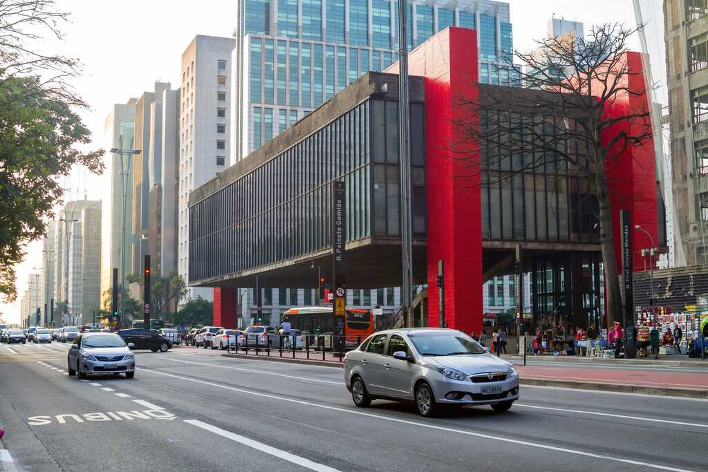
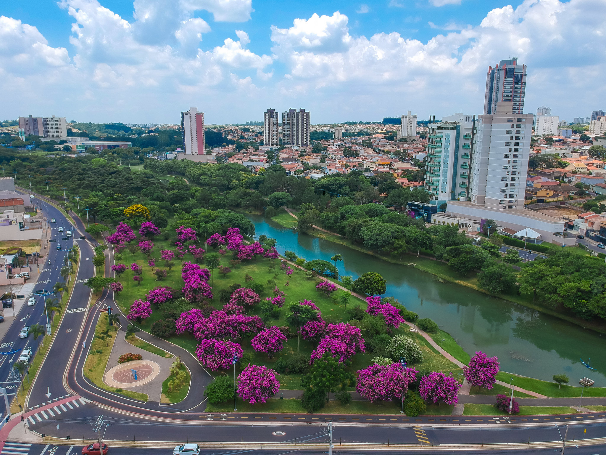

São Paulo é um estado que se destaca pelo desenvolvimento tecnológico e pela inovação, e algumas de suas cidades vêm se destacando como verdadeiros polos de inteligência e modernidade. Entre as cidades mais inteligentes, estão São Paulo, Campinas, São José dos Campos e Sorocaba, que investem fortemente em tecnologia, educação, infraestrutura e qualidade de vida. Essas cidades oferecem soluções inovadoras em mobilidade urbana, segurança, gestão pública e serviços digitais, tornando a vida dos cidadãos mais prática e conectada.
Além disso, cidades como Ribeirão Preto, Bauru, Jundiaí e Santos vêm se destacando pelo incentivo a startups, parques tecnológicos e centros de pesquisa, além de programas voltados à sustentabilidade e à eficiência energética. O foco na educação e na qualificação profissional também contribui para que essas cidades mantenham um ambiente inovador, atraindo empresas e talentos que fortalecem a economia local.
Por fim, cidades como São Caetano do Sul e Barueri completam a lista, mostrando que o conceito de “cidade inteligente” não se limita apenas à tecnologia, mas também à qualidade de vida, à governança eficiente e à preocupação com o meio ambiente. Essas cidades se tornam referências no estado de São Paulo, servindo como modelos de planejamento urbano, gestão de recursos e inovação social, e demonstram que é possível combinar progresso tecnológico com bem-estar da população.

São Paulo é a maior cidade do Brasil e um dos principais centros financeiros, culturais e tecnológicos da América Latina. Com uma economia diversificada, a cidade abriga empresas de diversos setores, incluindo tecnologia, indústria, comércio e serviços, atraindo profissionais e investimentos de todo o país. A mobilidade urbana é dinâmica, com metrô, trens e ônibus integrados, além de iniciativas para transporte sustentável e inovação em tecnologia urbana.
Além do aspecto econômico, São Paulo é rica em cultura e lazer, com museus, teatros, centros culturais, parques e uma gastronomia extremamente diversificada. A cidade também oferece inúmeros eventos gratuitos, feiras e espaços públicos de convivência, tornando o cotidiano mais acessível e estimulante para moradores e turistas. Essa combinação de inovação, infraestrutura e oportunidades faz de São Paulo uma das cidades mais inteligentes e influentes do Brasil.
São Caetano do Sul é uma cidade do ABC Paulista conhecida por sua organização urbana e alta qualidade de vida. Com forte presença industrial e comércio diversificado, a cidade investe em tecnologia, gestão pública eficiente e infraestrutura moderna, facilitando o dia a dia dos moradores. Transporte público, áreas verdes e serviços digitais contribuem para tornar a cidade prática e conectada.
Além disso, São Caetano oferece cultura e lazer, com parques, centros culturais, teatros e eventos comunitários ao longo do ano. A cidade também se destaca pelo foco em educação, sustentabilidade e projetos sociais, mostrando como planejamento urbano e inovação podem melhorar a vida da população e atrair investimentos.
Barueri é uma cidade da Grande São Paulo conhecida por seu dinamismo econômico e forte presença de empresas e startups. Com investimentos em tecnologia, infraestrutura urbana e transporte eficiente, a cidade facilita o cotidiano de moradores e profissionais, além de atrair investimentos e talentos para a região.
A cidade também oferece opções de lazer e cultura, como parques, teatros e eventos comunitários. Barueri investe em sustentabilidade, inovação e planejamento urbano, combinando crescimento econômico com qualidade de vida, o que a torna uma das cidades mais inteligentes do estado.
Jaguariúna é uma cidade do interior de São Paulo conhecida por sua qualidade de vida e desenvolvimento sustentável. Com economia baseada em indústria, agricultura e comércio local, a cidade investe em tecnologia, urbanismo planejado e serviços públicos eficientes, tornando o cotidiano dos moradores mais prático e conectado.
Além disso, Jaguariúna se destaca pelo turismo rural e eventos culturais, como exposições e festas tradicionais. Parques, áreas verdes e espaços de lazer contribuem para o bem-estar da população, mostrando como inovação, cultura e planejamento podem tornar a cidade mais inteligente e atraente.

Sorocaba é uma cidade do interior paulista reconhecida por sua economia diversificada, que inclui indústria, comércio e serviços, além de investimentos em tecnologia e inovação. A cidade possui infraestrutura moderna, transporte eficiente e planejamento urbano, tornando o dia a dia dos moradores mais prático e conectado.
Além da economia, Sorocaba se destaca pela qualidade de vida, com áreas verdes, parques, centros culturais e opções de lazer. A cidade também investe em educação e sustentabilidade, equilibrando crescimento econômico com bem-estar da população e tornando-se uma referência em cidades inteligentes no estado de São Paulo.
Santos é uma cidade litorânea do estado de São Paulo, famosa pelo seu porto, o maior da América Latina, que impulsiona a economia local e gera empregos. A cidade investe em tecnologia, transporte eficiente e infraestrutura urbana, garantindo praticidade e conectividade para moradores e turistas.
Além do setor econômico, Santos se destaca pelo turismo, com praias, jardins e parques, e pela vida cultural ativa, com museus, teatros e eventos gratuitos ao longo do ano. A combinação de desenvolvimento econômico, lazer e inovação faz de Santos uma das cidades mais inteligentes do estado.

São José do Rio Preto é uma cidade do interior paulista conhecida por sua economia diversificada, que inclui comércio, serviços, indústria e agronegócio. A cidade investe em tecnologia, planejamento urbano e infraestrutura moderna, oferecendo transporte eficiente e serviços digitais para facilitar a vida dos moradores.
Além disso, São José do Rio Preto se destaca pela cultura e lazer, com teatros, museus, parques e eventos gratuitos ao longo do ano. A cidade também investe em educação, saúde e sustentabilidade, equilibrando crescimento econômico com qualidade de vida e tornando-se uma referência em cidades inteligentes do estado.

Indaiatuba é uma cidade do interior de São Paulo conhecida pelo desenvolvimento econômico e qualidade de vida. A cidade investe em tecnologia, infraestrutura urbana e planejamento, oferecendo transporte eficiente, serviços digitais e áreas verdes, o que torna o cotidiano dos moradores mais prático e conectado.
Além disso, Indaiatuba se destaca pelo lazer e cultura, com parques, centros culturais, teatros e eventos comunitários. A cidade também foca em educação, sustentabilidade e inovação, equilibrando crescimento econômico com bem-estar da população e consolidando-se como uma das cidades mais inteligentes do estado.
Campinas é uma cidade do interior paulista conhecida como um importante polo tecnológico e educacional do estado. Com diversas universidades, centros de pesquisa e empresas de tecnologia, a cidade atrai profissionais qualificados e investimentos, além de oferecer infraestrutura urbana moderna e transporte eficiente para seus moradores.
Além da economia e tecnologia, Campinas se destaca pela cultura e lazer, com teatros, museus, parques e eventos gratuitos. A cidade também investe em sustentabilidade, educação e inovação, equilibrando desenvolvimento econômico com qualidade de vida e consolidando-se como uma das cidades mais inteligentes de São Paulo.

Santo André é uma cidade do ABC Paulista conhecida pelo equilíbrio entre indústria, comércio e tecnologia. A cidade investe em infraestrutura urbana, transporte eficiente e serviços digitais, facilitando o dia a dia dos moradores e promovendo conectividade e inovação.
Além disso, Santo André oferece cultura e lazer, com parques, museus, teatros e eventos comunitários. A cidade também investe em educação, sustentabilidade e projetos sociais, combinando desenvolvimento econômico com qualidade de vida e tornando-se uma referência entre as cidades inteligentes do estado.